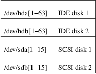

fsck.minix − check consistency of Minix filesystem
fsck.minix [options] device
fsck.minix performs a consistency check for the Linux MINIX filesystem.
The program assumes the filesystem is quiescent. fsck.minix should not be used on a mounted device unless you can be sure nobody is writing to it. Remember that the kernel can write to device when it searches for files.
The device name will usually have the following form:

If the filesystem was changed, i.e., repaired, then fsck.minix will print "FILE SYSTEM HAS BEEN CHANGED" and will sync(2) three times before exiting. There is no need to reboot after check.
fsck.minix should not be used on a mounted filesystem. Using fsck.minix on a mounted filesystem is very dangerous, due to the possibility that deleted files are still in use, and can seriously damage a perfectly good filesystem! If you absolutely have to run fsck.minix on a mounted filesystem, such as the root filesystem, make sure nothing is writing to the disk, and that no files are "zombies" waiting for deletion.
−l, −−list
List all filenames.
−r, −−repair
Perform interactive repairs.
−a, −−auto
Perform automatic repairs. This option implies −−repair and serves to answer all of the questions asked with the default. Note that this can be extremely dangerous in the case of extensive filesystem damage.
−v, −−verbose
Be verbose.
−s, −−super
Output super−block information.
−m, −−uncleared
Activate MINIX−like "mode not cleared" warnings.
−f, −−force
Force a filesystem check even if the filesystem was marked as valid. Marking is done by the kernel when the filesystem is unmounted.
−h, −−help
Display help text and exit.
−V, −−version
Print version and exit.
There are numerous diagnostic messages. The ones mentioned here are the most commonly seen in normal usage.
If the device does not exist, fsck.minix will print "unable to read super block". If the device exists, but is not a MINIX filesystem, fsck.minix will print "bad magic number in super−block".
The exit status returned by fsck.minix is the sum of the following:
0
No errors
3
Filesystem errors corrected, system should be rebooted if filesystem was mounted
4
Filesystem errors left uncorrected
7
Combination of exit statuses 3 and 4
8
Operational error
16
Usage or syntax error
Linus Torvalds <torvalds@cs.helsinki.fi>. Exit status values by Rik Faith <faith@cs.unc.edu> Added support for filesystem valid flag: Dr. Wettstein <greg%wind.uucp@plains.nodak.edu>. Check to prevent fsck of mounted filesystem added by Daniel Quinlan <quinlan@yggdrasil.com>. Minix v2 fs support by Andreas Schwab <schwab@issan.informatik.uni−dortmund.de>, updated by Nicolai Langfeldt <janl@math.uio.no>. Portability patch by Russell King <rmk@ecs.soton.ac.uk>.
fsck(8), fsck.ext2(8), mkfs(8), mkfs.ext2(8), mkfs.minix(8), reboot(8)
For bug reports, use the issue tracker at <https://github.com/util−linux/util−linux/issues>.
The fsck.minix command is part of the util−linux package which can be downloaded from Linux Kernel Archive <https://www.kernel.org/pub/linux/utils/util−linux/>.